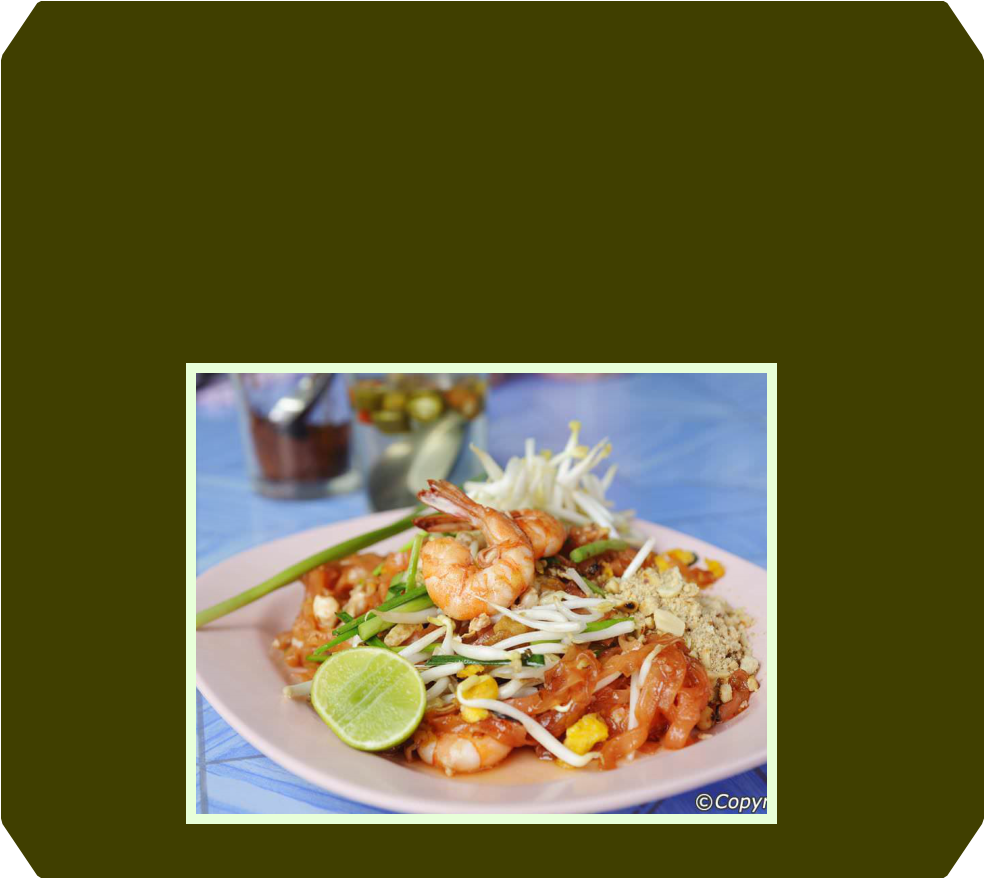
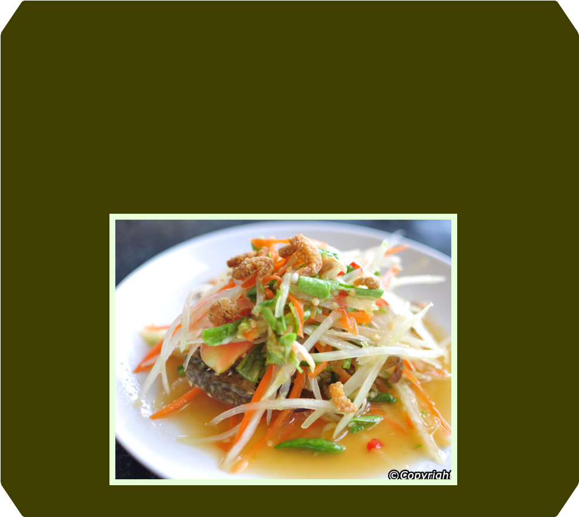

Designed by Lê Nguyễn Thanh Trúc
Design of Online Educational Resources. Instructor: Nguyễn Ngọc Vũ, Ph.D
Copyright © 2017. All rights reserved.


HISTORY AND FOOD
Until 1939, the country we call Thailand was known as Siam. It was the
only Southeast Asian country never colonized by the West. This
helped Thailand to maintain its own special cuisine (cooking style).
However, that cuisine had already been influenced by Thailand's
Asian neighbors.
The Thai (pronounced TIE) people migrated to their present homeland
from southern China about 2,000 years ago. They brought with them
the spicy cooking of their native Yunan province, as well as its dietary
staple, rice. Other Chinese influences on Thai cooking included the
use of noodles, dumplings, soy sauce, and other soy products. Like
the Chinese, the Thais based their recipes on blending five basic
flavors: salty, sweet, sour, bitter, and hot.
From nearby India came not only the Buddhist religion, but also spicy
seasonings such as cumin, cardamom, and coriander, as well as curry
dishes. The Malays, to the south, further shared seasonings, as well
as their love of coconuts and the satay (a dish that is similar to shish
kebabs). Since 1970, Thai cooking has become extremely popular in
both North America and Britain.
TOM YUM GOONG
The quintessential Thai aroma! A bold, refreshing blend of fragrant
lemongrass, chilli, galangal, lime leaves, shallots, lime juice and fish
sauce shapes this classic soup, giving it its legendary herbal kick.
Succulent fresh prawns and straw mushrooms lend it body. A versatile
dish that can fit within virtually any meal, the distinctive smell reminds
you of exotic perfume, while it's invigorating sour-spicy-hot taste just
screams 'Thailand'!

PAD THAI (Thai style Fried Noodles)
From Cape Town to Khao San Road, the default international Thai dish!
Dropped in a searing hot wok, fistfuls of small, thin or wide noodles (you
choose) do a steamy minute-long dance alongside crunchy beansprouts,
onion and egg, before disembarking for the nearest plate. A truly
interactive eating experience, half its fun (and flavour) lies in then using
a quartet of accompanying condiments - fish sauce, sugar, chilli powder
and finely ground peanuts - to wake it from its slumbers.

SOM TUM (Spicy Green Papaya Salad)
Hailing from the Northeast state of Isaan, this outlandish dish is both
great divider - some can't get enough of its bite, some can't handle it -
and greatly distinctive. Garlic, chilies, green beans, cherry tomatoes and
shredded raw papaya get dramatically pulverized in a pestle and mortar,
so releasing a rounded sweet-sour-spicy flavour that's not easily
forgotten. Regional variations throw peanuts, dry shrimp or salted crab
into the mix, the latter having a gut-cleansing talent that catches many
newcomers by surprise!